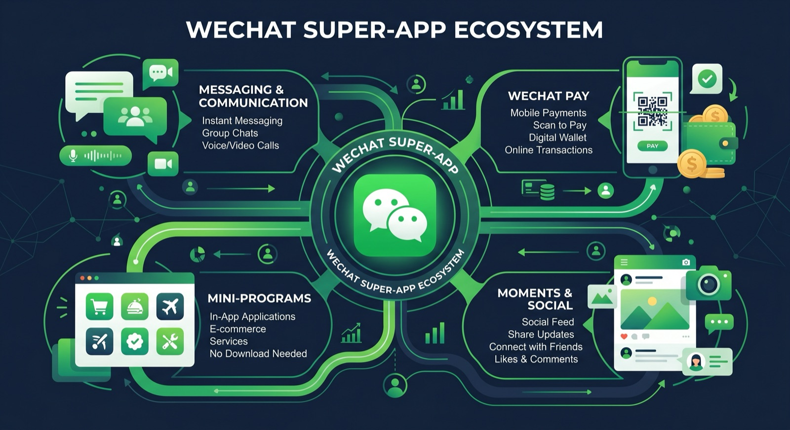
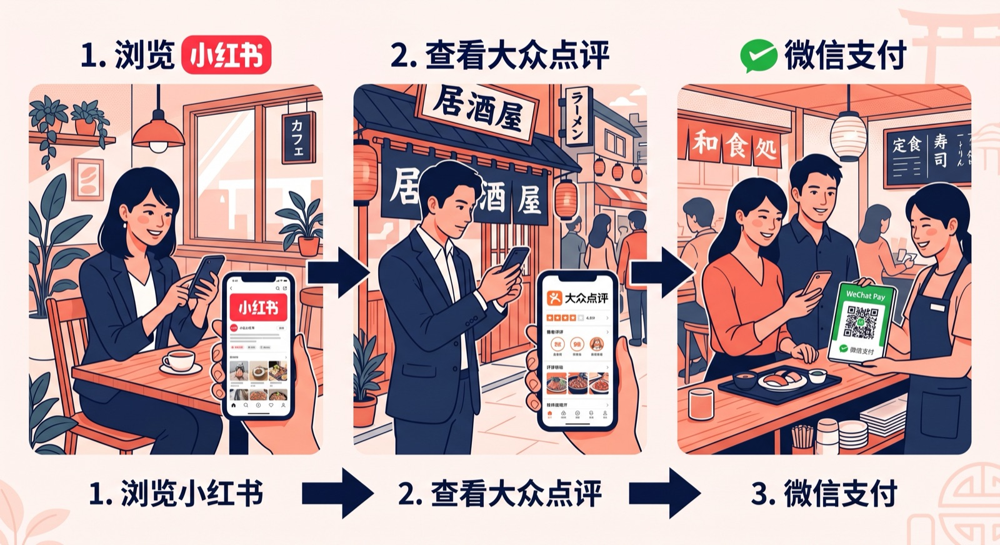

「中国人観光客を集客したい。でもWeChatって何から始めればいい？」「WeChatとLINEって何が違うの？」——そんな疑問を持つ日本の事業者様はとても多いです。
WeChat（微信：ウィーチャット）は、中国最大のSNS・メッセージングアプリであり、月間アクティブユーザーが13億人以上に達する巨大プラットフォームです。単なるチャットアプリではなく、情報収集・決済・予約・ショッピングまでが一つのアプリで完結する「スーパーアプリ」として機能しています。
本記事では、WeChatの基本から、インバウンド集客に活用できる公式アカウント・ミニプログラム・WeChatペイの仕組み、そして日本企業が今すぐ取り組むべき施策まで、PROTECHが徹底解説します。
WeChat（微信）とは？LINEとの違い
WeChatは2011年にテンセント（騰訊）が開発したメッセージアプリです。中国国内では「LINEの代わり」のように使われていますが、機能の幅はLINEを大きく上回ります。
| 比較項目 | WeChat（微信） | LINE |
|---|---|---|
| 主なユーザー | 中国・アジア圏 | 日本・東南アジア |
| 月間アクティブユーザー | 13億人以上 | 約2億人 |
| 決済機能 | WeChat Pay（国内外対応） | LINE Pay（国内中心） |
| ミニアプリ | ミニプログラム（500万以上） | LINEミニアプリ |
| 公式アカウント | サービスアカウント・定期刊 | 公式アカウント |
| SNS機能 | モーメンツ（朋友圈） | タイムライン |
特に重要なのは、訪日中国人のほぼ全員がWeChatを日常的に使用している点です。旅先での情報収集・友人へのシェア・決済まで、WeChat一本で完結するため、中国人観光客へリーチするにはWeChatへの対応が不可欠です。
WeChatの4つの主要機能とマーケティング活用法
WeChatをインバウンド集客に活用する際、押さえておきたい主要機能は4つあります。
① 公式アカウント（服务号・订阅号）
WeChatの公式アカウントは、企業・ブランドが中国ユーザーに直接情報を届けるための基盤となる機能です。大きく2種類に分かれています。
- サービスアカウント（服务号）：月4回までメッセージ配信可。クーポン・メニュー・予約機能など高度なカスタマイズが可能。インバウンド施策には主にこちらを利用。
- 定期刊号（订阅号）：毎日配信可能。コンテンツ発信・ブログ的な運用に向く。
公式アカウントを取得することで、フォロワーへのクーポン配信・予約受付・問い合わせ対応・メニュー案内などを中国語で行うことができます。訪日前から信頼関係を構築し、来店を促す強力な手段です。
② ミニプログラム（小程序）
WeChat内で動作する軽量アプリです。アプリのダウンロード不要でユーザーがすぐに利用できるため、飲食店・ホテル・観光施設で急速に普及しています。
ミニプログラムで実現できること（例）
オンライン予約・テーブル予約 ／ デジタルメニュー（多言語対応）／ 電子クーポン発行 ／ ポイントカード ／ 商品EC販売 ／ 店舗内ナビ・案内
特に「来店前にWeChat内で予約＆決済まで完了できる」仕組みを作ることで、言語の壁を取り除き、中国人観光客のコンバージョン率を大幅に改善できます。PROTECHではWeChatミニプログラムの開発・運用支援も行っています。
③ WeChat Pay（微信支付）
中国でAlipayと並ぶ二大QRコード決済サービスです。訪日中国人の多くが現金やクレジットカードよりもWeChat Payを優先するため、WeChat PayやAlipayなどのモバイル決済を導入していない店舗は、それだけで機会損失が生じている可能性があります。
- QRコードを提示するだけで支払い完了（店舗側の負担が最小）
- 中国元での価格表示・決済が可能
- 売上はまとめて日本円で入金される
- クーポンやキャッシュバックとの連動も可能
④ モーメンツ広告（朋友圈広告）
中国ユーザーのタイムライン（朋友圈）に表示される広告です。年齢・性別・位置情報・興味関心でセグメントができるため、訪日予定の中国人ユーザーにピンポイントでアプローチすることが可能です。認知拡大フェーズで特に効果的です。

業種別：WeChat活用の具体的な戦略
飲食店・レストランの場合
飲食店では、大衆点評との連携が最も効果的です。大衆点評で発見→WeChatの公式アカウントをフォロー→ミニプログラムで予約＆クーポン取得→来店、という完結した集客ファネルを構築できます。
- 中国語メニューのミニプログラム化
- 予約確認・リマインドのWeChat自動配信
- 来店後の口コミ投稿を促すQRコード設置
ホテル・旅館の場合
宿泊施設では、訪日前からのコミュニケーションが最大の差別化ポイントになります。
- 公式アカウントでの旅行情報・周辺観光スポット発信
- ミニプログラムによるオンラインチェックイン・ルームサービス注文
- WeChat Pay対応でスムーズな決済体験の提供
- チェックアウト後のレビュー依頼メッセージ自動配信
小売・免税店の場合
商品情報の事前発信と、来店時のスムーズな決済体験がポイントです。
- モーメンツ広告での新商品・セール情報の認知拡大
- ミニプログラムを使った在庫確認・事前注文機能
- 購入後のアフターフォローメッセージで口コミを促進
公式アカウント取得の流れと注意点
WeChat公式アカウントの開設には、いくつかの条件があります。日本企業が開設する際の基本的な流れを解説します。
- アカウント種別の選択：サービスアカウント（服务号）か定期刊号（订阅号）かを決定
- 企業書類の準備：日本の法人登記謄本・代表者の身分証明書など
- 審査申請：WeChat公式サイト（外国企業向けポータル）から申請（審査期間：通常1〜3週間）
- 認証費用の支払い：年間約300米ドル相当（サービスアカウントの場合）
- アカウント設定・運用開始：プロフィール・メニュー設定、ミニプログラムの連携
注意点：公式アカウントの審査や各種設定は中国語で行う必要があります。また、中国の規制上、コンテンツには一定のガイドラインが設けられています。初めての場合は専門の代行会社に依頼することをおすすめします。
WeChat×小紅書×大衆点評：3つを組み合わせた最強の集客設計
WeChatは単独で使うよりも、他の中国SNSと組み合わせることで最大の効果を発揮します。PROTECHが推奨するのは以下の3プラットフォーム連携です。

① 小紅書（RED）：認知・発見フェーズ
旅行前に「日本旅行 おすすめ」などで検索する中国人ユーザーに、魅力的な写真・動画コンテンツで発見してもらう。
② 大衆点評：比較・検討フェーズ
店舗情報・口コミを確認し、「ここに行きたい」という意思決定を促す。
③ WeChat：予約・来店・リピートフェーズ
公式アカウント・ミニプログラムで予約受付。来店後もフォローし、口コミ投稿や再来店を促す。
この3段階のファネルを構築することで、「知る→検討する→来店する→また来る」という継続的なインバウンド集客サイクルを実現できます。詳しくはインバウンド集客ファネルの設計の記事もご覧ください。
WeChat導入にかかる費用の目安
WeChatのマーケティング活用にかかる費用は、何を実施するかによって大きく異なります。一般的な目安を以下に示します。
| 施策 | 費用目安（月額） | 備考 |
|---|---|---|
| 公式アカウント開設代行 | 10〜30万円（初期） | 認証費含む、代行手数料別途 |
| 公式アカウント運用代行 | 5〜15万円/月 | コンテンツ制作・配信含む |
| ミニプログラム開発 | 30〜200万円（初期） | 機能範囲による。詳細はこちら |
| WeChat Pay導入 | 0〜5万円（初期） | 決済代行会社により異なる |
| モーメンツ広告 | 20〜100万円/月 | 広告費のみ（制作費別） |
費用対効果を最大化するには、まずWeChat Pay導入と公式アカウント開設を最優先に行い、集客データを見ながらミニプログラム開発・広告投資に段階的に拡大していくアプローチが賢明です。インバウンド施策全体の料金比較については、インバウンド集客の費用・料金相場も参考にしてください。
まとめ：WeChatはインバウンド集客の「インフラ」
WeChat（微信）は、訪日中国人観光客にとって日常生活の一部です。情報収集・予約・決済・クチコミ共有のすべてがWeChat上で完結する現在、WeChatへの対応は中国インバウンドの「インフラ整備」とも言えます。
「何から始めればいいかわからない」「中国語対応できるスタッフがいない」という場合でも、PROTECHにご相談いただければ、公式アカウントの取得代行からコンテンツ制作・ミニプログラム開発・WeChat Pay導入まで、ワンストップでサポートします。
まずはお気軽に無料相談から始めてみましょう。